当天发帖数量：10 篇（时间跨度 15:49–17:23，均为星主 Jason 不跪原创）
今日要点速览
今天 10 篇帖子可以串成两条主线。国内一条线：内需偏弱 + 财政/税制发力对冲。 一边是房地产仍在磨底、居民在"去杠杆 + 消费降温"（三张自制图表把这点讲得很直白）、工业利润只有"AI + 有色"一枝独秀；另一边是财政开始加码（下半年基建资金有望提速）、税制在做结构性调整（电池消费税从免征恢复征收，既补财政又推动"反内卷"）。海外一条线：通胀与加息回归 + 地缘风险。 债券市场重新押注美联储要加息、拉美货币套息交易大赚、油价高位可能让中国 PPI 二次回升；同时美伊冲突已持续八天并开始波及民用设施，成为悬在市场头上的尾部风险。
一句话概括 Jason 今天想传递的信号：中国正处在"弱需求、强政策、低通胀"的组合里，而海外正相反，是"通胀黏、要加息、地缘乱"——两边的货币政策方向正在背离，这对人民币汇率、跨境资金流和大类资产都是关键变量。
第 1 篇 · 15:49 · 美伊冲突升级（zerohedge） #其他国家经济#
帖子原文：
zerohedge：美伊冲突在周末持续升级，双方互相攻击，自战争爆发以来，美国死亡人数已达到 17 人，特朗普对局势下一步进展有点言辞闪烁，或许他也在观察市场对现状的接受度。#其他国家经济#
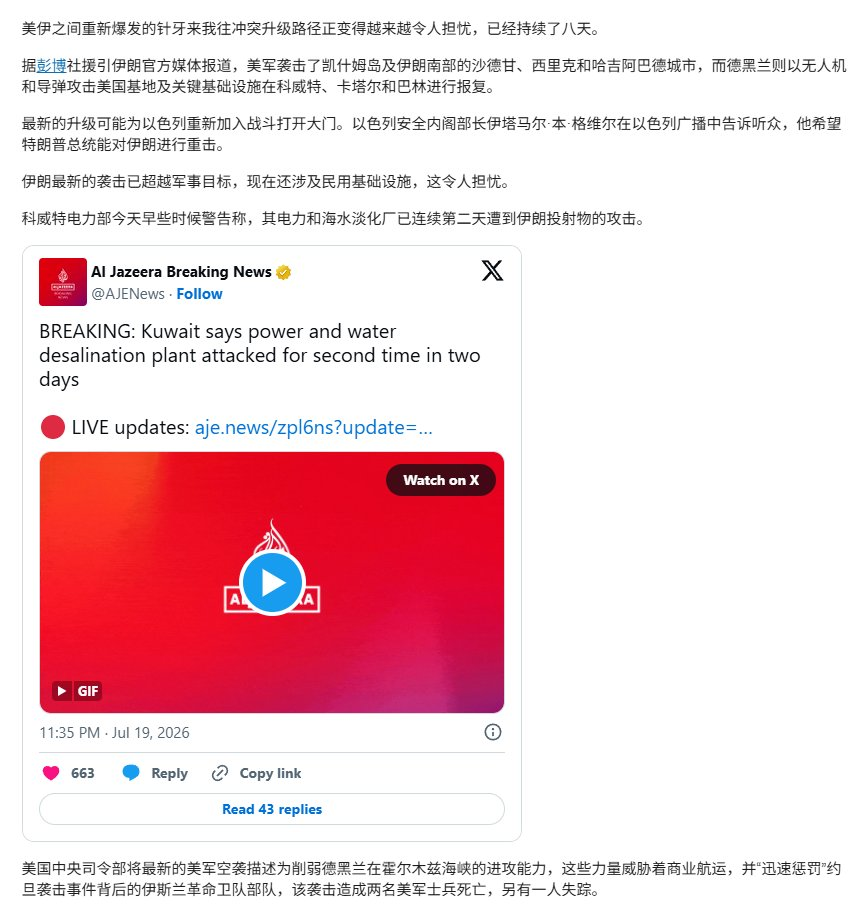
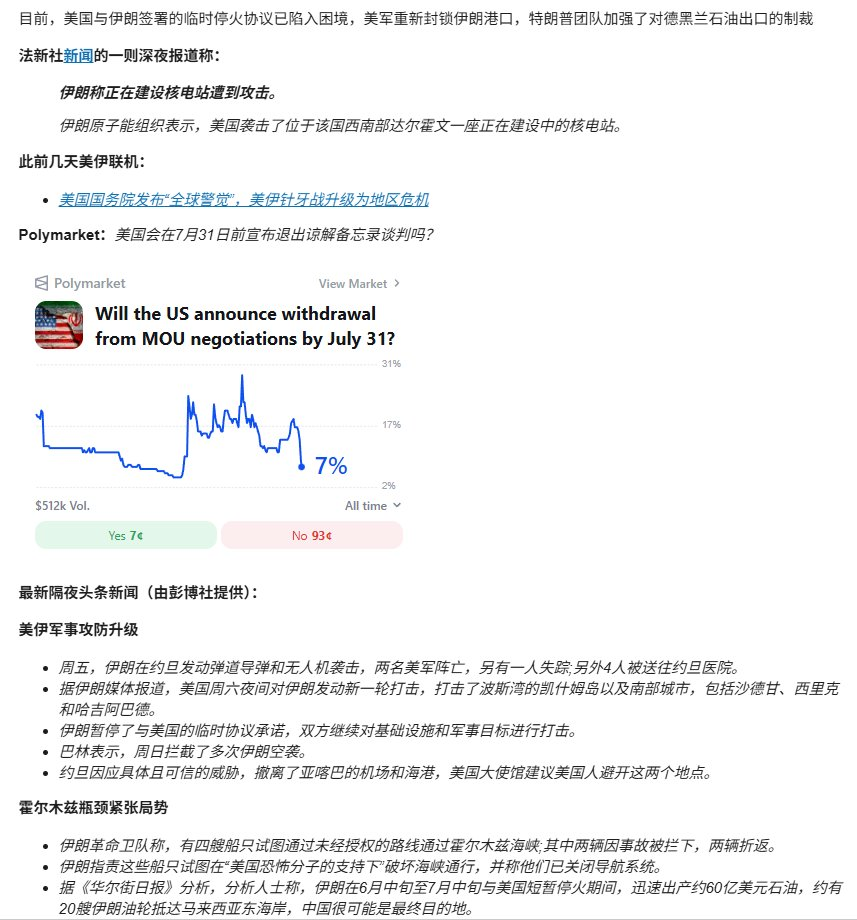
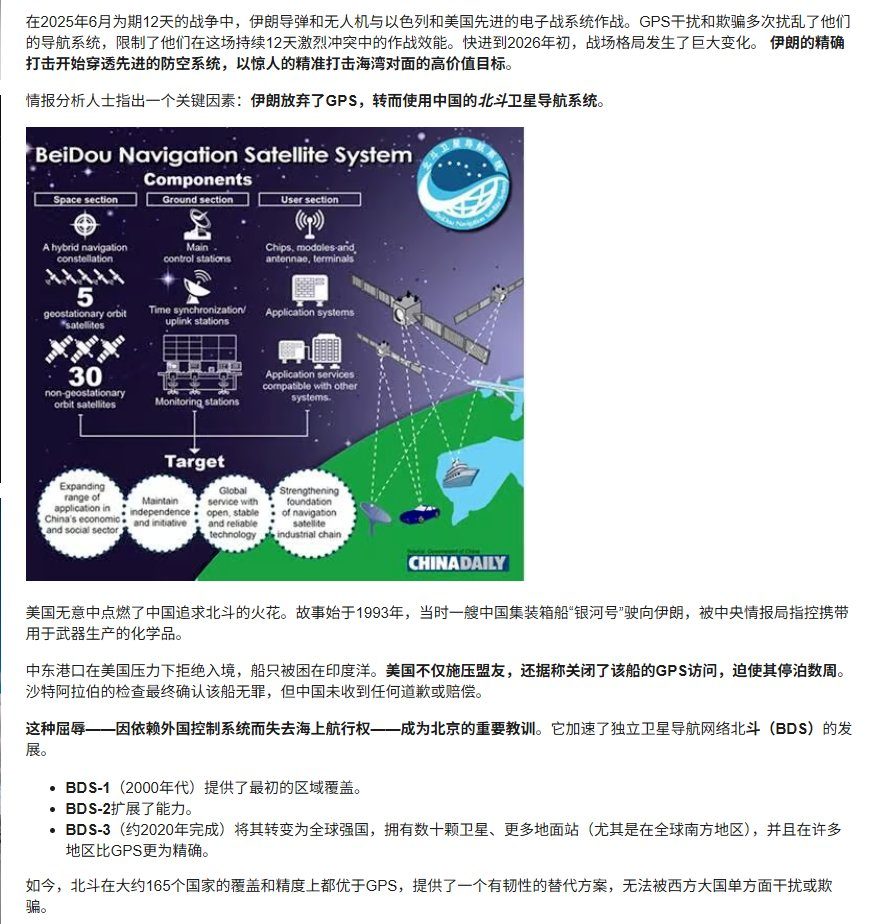
一句话核心： 美伊军事冲突已持续八天且开始波及民用基础设施（科威特电力、海水淡化厂被袭），风险从"军事对抗"外溢到"经济命脉"，但市场目前仍相对淡定。
背景与关键数据： 冲突进入第 8 天，美军阵亡累计 17 人；伊朗用无人机、导弹打击科威特、卡塔尔、巴林的美军基地及关键基础设施，科威特电厂/海水淡化厂连续两天被袭。图 2 里那个 Polymarket（一个用真金白银下注、赔率反映真实预期的预测市场） 显示："美国会在 7 月 31 日前宣布退出谅解备忘录谈判吗"当前 只有 7% 概率（Yes 7 美分、No 93 美分），意味着押注方认为短期内谈判还不会破裂。文中还提到伊朗在 6 月中到 7 月中"抢出口"了约 60 亿美元原油、约 20 艘油轮驶向东南亚，中国很可能是最终买家。
图片解读：
- 图 1：路透/彭博报道的中文转译，配一条半岛电视台（Al Jazeera）的推文——"科威特电力和海水淡化厂两天内第二次遭袭"。信号：战火正从纯军事目标扩散到民用生命线。
- 图 2：核心是那张 Polymarket 走势图，纵轴是"退出谈判"的隐含概率（2%–31% 区间），一路从高点回落到 7%。旁边列了霍尔木兹海峡的紧张局势——伊朗革命卫队拦截未授权船只、扬言关闭导航系统。
- 图 3：一张"北斗卫星导航系统"的科普图。关键信息是文字：伊朗在这轮冲突中放弃了美国 GPS，改用中国北斗。因为 2025 年那场 12 天战争里，美方用 GPS 干扰/欺骗压制了伊朗的制导武器；换成北斗后精度大增。图里标注北斗有 5 颗地球同步轨道卫星 + 30 颗非同步卫星，BDS-3 约 2020 年建成、覆盖约 165 个国家，在"全球南方"地区精度甚至优于 GPS。
为什么重要 / 对市场和经济的含义： 三条传导链。① 油价：霍尔木兹海峡是全球约 1/5 原油的必经水道，一旦封锁，油价会跳涨——这直接连到今天第 8 篇的"油价推升 PPI"。② 避险情绪：地缘升级通常利好黄金、美元、美债，利空风险资产，但目前 Polymarket 才 7%，说明市场还没定价"最坏情况"。③ 地缘站队：伊朗改用北斗、原油卖给中国，是"去美元/去美国技术依赖"阵营化的又一例证，长期利好中国的技术与货币外溢。
延伸知识 —— 什么是"预测市场"？ Polymarket 这类平台让人用真钱对未来事件下注，赔率会实时反映"群体智慧"对概率的判断，往往比民调、专家更快更准（因为下错要亏钱）。看新闻时，与其听评论员喊"很危险"，不如看预测市场的概率——它是市场自己用钱投出来的"体温计"。另一个类比：这就像赌场对一场球赛开的盘口，盘口比记者的主观判断更能反映真实胜率。
第 2 篇 · 15:53 · 房地产仍在磨底（国金证券） #房价#
帖子原文：
国金：新房方面，上周（7.11-7.17）景气度下行趋缓，47 城新房成交面积环比下降 15%，同比降幅走阔至 -12.0%。二手房方面，22 城二手房成交量小幅回落，但好于季节性，仍处于过去 5 年同期的最好水平。从代表供给侧压力的挂牌量变化看，7 月以来挂牌量再度回升，较 6 月末的变化幅度由上周的 -0.08% 增加至 0.13%。房地产仍在磨底。#房价#
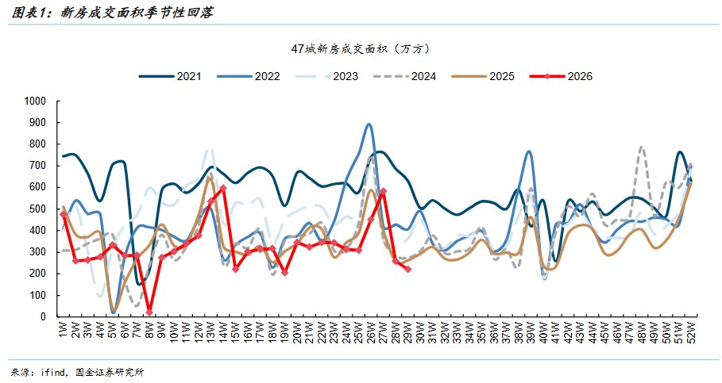
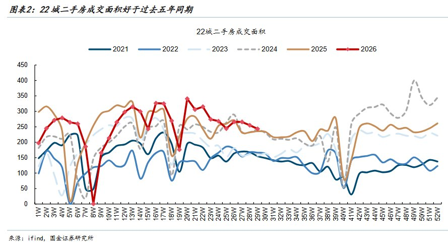
一句话核心： 新房还在往下走、二手房相对抗跌，加上卖房挂牌量重新回升（供给压力上来），整体房地产还在"磨底"，没有拐点。
背景与关键数据： "环比"= 跟上一周比，"同比"= 跟去年同期比。新房上周成交面积环比 -15%、同比 -12.0%（同比降幅还在扩大）；二手房量小幅回落但仍是过去 5 年同期最好水平。挂牌量（业主挂出来卖的房子数量）7 月重新回升，说明想卖房的人变多了——这是供给端的压力信号，压制价格。
图片解读：
- 图表 1（新房成交面积季节性）：横轴是一年 52 周，每条线是一个年份。红色 2026 线目前在第 29 周附近掉到 ~200 万方，位置明显低于棕色的 2025 线，且在所有年份里偏低——直观印证"新房还在下行"。
- 图表 2（二手房成交面积）：同样的画法，红色 2026 线是所有年份里最高的一条，明显高于 2021–2025——这就是"二手房好于季节性、处于 5 年最好水平"。
为什么重要 / 对市场和经济的含义： 房地产是中国居民财富和内需的压舱石。"新房弱、二手房强"说明需求没消失，只是从买新房转向买更便宜的二手房（购买力下沉、对价格更敏感）。挂牌量回升 + 新房下行意味着房价短期难反转，这会继续压制与地产链条相关的钢铁、水泥、家电、家具，也解释了为什么政策要靠基建（第 4 篇）来托底。
延伸知识 —— 什么叫"磨底"？ 就是价格/成交量不再快速下跌，但也涨不上去，在低位来回横盘、反复震荡，像磨盘一样慢慢转。它不同于"见底反弹"——磨底期可能持续很久，期间任何一次小反弹都容易被后续的挂牌抛压打回去。判断真正见底，通常要看到"量先于价"企稳（成交量持续放大后价格才跟上）。
第 3 篇 · 16:01 · 美联储加息预期与拉美套息交易（bloomberg） #金融#
帖子原文：
bloomberg：交易员仍预计美联储几乎肯定会在年底前开始加息——最早甚至可能在九月。鉴于美国国债收益率已因预期大幅上升，替美联储做了部分工作，对金融市场的影响可能相对缓和。自 2 月底以来，两年期美国国债利率已上涨约 0.5 个百分点，接近 4.2%，远高于美联储利率的 3.5%-3.75% 区间。目前机构喜欢对拉美货币进行套息交易，借低利率货币 → 买高利率货币 → 吃利差。Carry Trade 本质上是在卖波动率。今年截至目前，借美元进行套利，买哥伦比亚比索累计收益 +22%，买巴西雷亚尔累计 +12.9%。#金融#
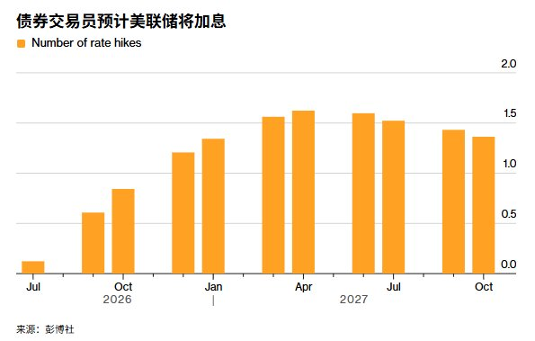
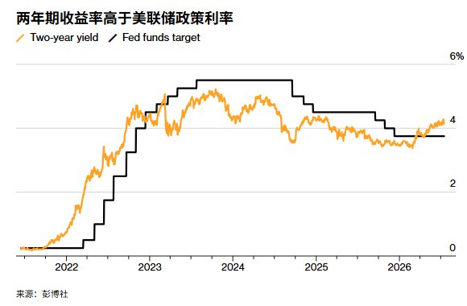
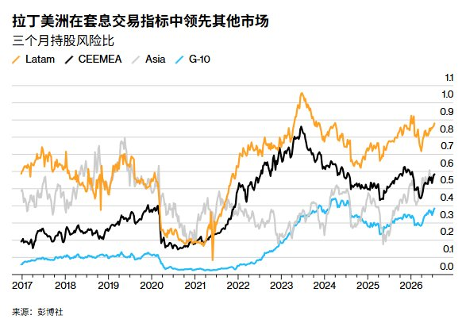
一句话核心： 市场重新押注美联储要"加息"（而不是降息），债券利率已抢跑；同时借美元去买拉美高息货币的"套息交易"今年赚得盆满钵满。
背景与关键数据： 交易员预期美联储最早 9 月加息、年底前几乎肯定动手。两年期美债利率（对政策利率预期最敏感的品种）自 2 月底涨了约 0.5 个百分点到 ~4.2%，已高于当前联邦基金利率 3.5%–3.75%——市场"提前替美联储加了息"。套息交易（Carry Trade）：借利率低的货币（美元）、买利率高的货币（哥伦比亚比索、巴西雷亚尔），赚两者利差。今年借美元买哥伦比亚比索累计 +22%、买巴西雷亚尔 +12.9%。
图片解读：
- 图 1（预计加息次数）：橙色柱是市场隐含的"未来加息次数"，从 2026 年 7 月的接近 0，一路抬升到 2027 年 4 月前后的 ~1.5 次——直观显示"加息预期在升温"。
- 图 2（两年期收益率 vs 政策利率）：橙色是 2 年期美债收益率、黑色阶梯线是联邦基金目标利率。近期橙线重新翘头到 ~4%、站上黑线——市场利率跑在央行前面。
- 图 3（拉美领先套息指标）：四条线是不同地区的"三个月持股风险比"，橙色的拉美（Latam）最高、冲到 0.8–1.0，远超黑色的中东欧中东非（CEEMEA）、灰色亚洲、蓝色 G-10。说明拉美是今年套息交易回报最好的方向。
为什么重要 / 对市场和经济的含义： ① 如果美联储真的转向加息，美元和美债利率走强，会抽走新兴市场资金、压制全球风险资产，也会给人民币汇率带来压力（连到第 9 篇结售汇）。② 套息交易"本质是卖波动率"——只要市场平静就稳赚利差，一旦爆发风险事件（比如美伊冲突失控），高息货币会瞬间暴跌，套息盘踩踏平仓，这是典型的"捡钢镚在压路机前"的交易。
延伸知识 —— "卖波动率"是什么意思？ 套息交易平时每天赚一点利差，收益像"涓涓细流"，但一旦黑天鹅来临就可能一次亏光几年的利差，收益形态是"长期小赚、偶尔巨亏"。这在数学上等价于"卖出保险"——你收着保费（利差），但出事时要赔大钱（汇率暴跌）。2024 年 8 月的日元套息平仓引发全球股市闪崩，就是活生生的例子。所以看到"某某套息今年大赚"时，要同时问一句：一旦风向变了，这些钱会跑得多快？
第 4 篇 · 16:06 · 基建投资：财政资金是关键变量（粤开证券） #TAX#
帖子原文：
粤开：近年来财政资金对基建投资的拉动作用明显增强，其投放节奏已成为影响基建投资短期波动的重要因素。2026 年 1-5 月基建投资增速明显回落，与基建相关财政资金投放进度偏慢密切相关。值得注意的是，地方城投是基建领域的主要参与方，但城投端因素并非 2026 年 1-5 月基建投资低迷的主因，2026 年城投融资环境未见进一步收紧。从资金端看，2026 年基建相关财政资金全年额度较为充足，下半年支出和发行进度有望明显提速，从而对基建投资形成更有力支撑。#TAX#
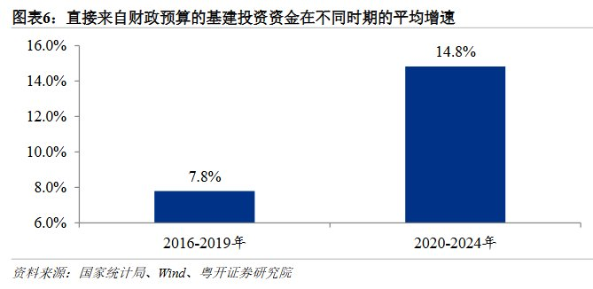
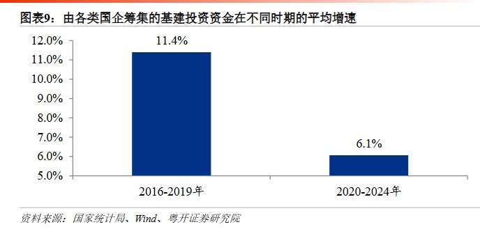
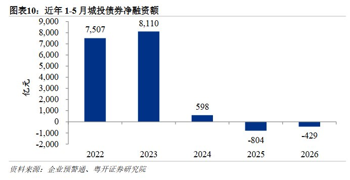
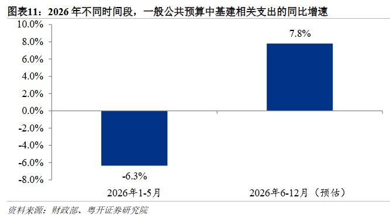
一句话核心： 上半年基建疲软主要是"财政钱没到位"（不是城投出问题），下半年财政资金加速下拨，基建有望提速。
背景与关键数据： "基建"= 修路、修桥、地铁、水利等公共工程，是政府逆周期托底经济的主要抓手。城投= 地方政府融资平台，过去是基建出资主力。粤开的判断：2026 年 1-5 月基建增速回落，主因是财政资金投放节奏慢，而非城投融资收紧；下半年额度充足，进度会提速。
图片解读：
- 图表 6（财政预算基建资金增速）：2016-2019 年平均 7.8%，2020-2024 年跳到 14.8%——财政预算这条腿的作用越来越大。
- 图表 9（国企筹集基建资金增速）：反过来，2016-2019 年 11.4% 降到 2020-2024 年 6.1%——国企/城投这条腿在弱化。两张图对照，说明基建的资金来源正从"城投举债"切换到"财政直接出钱"。
- 图表 10（1-5 月城投债净融资）：2022 年 7507 亿、2023 年 8110 亿高峰，2024 年骤降到 598 亿，2025、2026 年转为 净偿还 -804 亿、-429 亿——城投在"还债多过借新"，印证它已不是增量来源。
- 图表 11（2026 年基建相关财政支出同比）：2026 年 1-5 月是 -6.3%（拖累上半年），预估 6-12 月转为 +7.8%——这就是"下半年提速"的量化预期。
为什么重要 / 对市场和经济的含义： 基建是今年经济"稳增长"的关键筹码。图表把逻辑讲透了：城投在化债、退出出资，缺口要靠中央财政/专项债来填。若下半年财政真能从 -6.3% 翻到 +7.8%，将直接利好建筑、建材、工程机械等顺周期板块，也是对冲房地产下行（第 2 篇）的主要力量。反过来，如果财政发力不及预期，下半年经济就会缺一条腿。
延伸知识 —— 什么是"财政化债"与城投转型？ 过去十几年，地方靠城投平台大量举债搞基建，积累了巨额隐性债务。近年政策重点是"化债"——用发行低息的地方政府专项债、特殊再融资债去置换城投的高息债务，让城投"轻装上阵"甚至退出融资职能。代价是城投不再是基建的增量出资方，于是出资责任上移到中央财政。理解这个大背景，就能明白为什么"财政资金投放节奏"如今成了基建的命门。
第 5 篇 · 16:10 · 人均 GDP 与人口的辩论（何亚福） #经济数据#
帖子原文：
何亚福：如何看待中国 GDP 总量排全球第二，但人均 GDP 只排第 70 位？#经济数据#
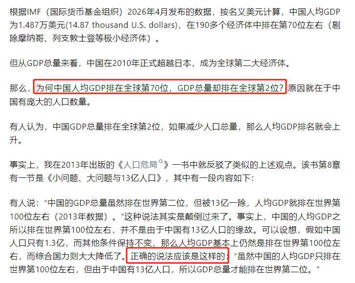
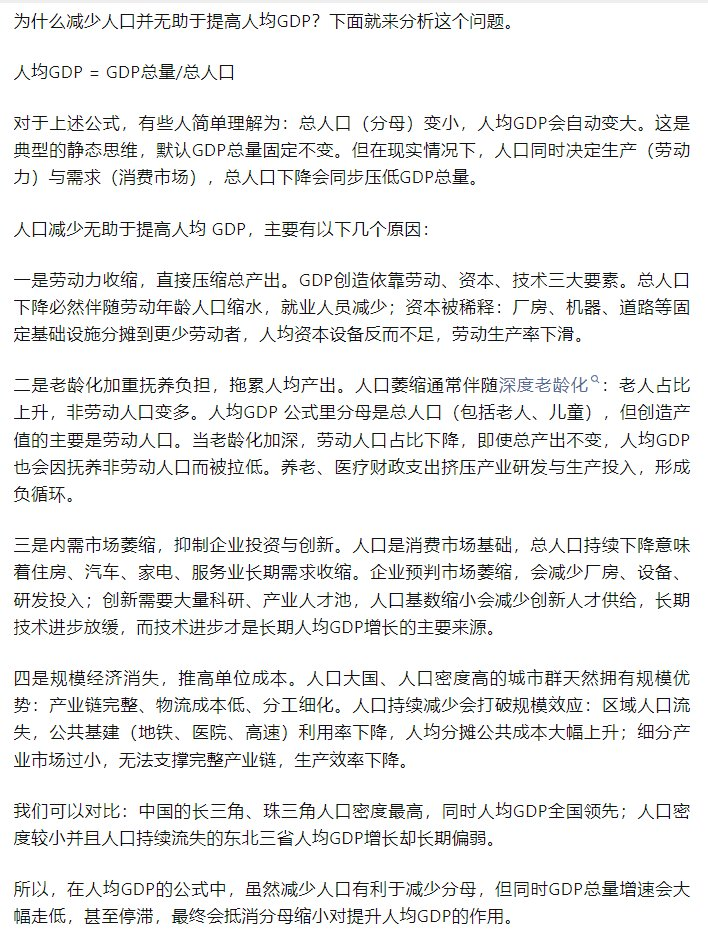
一句话核心： 中国人均 GDP 全球第 70 名，不是"因为人多被平均下去了"；相反，减少人口并不能提高人均 GDP，因为人口同时是"生产者"和"消费者"。
背景与关键数据： 据 IMF 2026 年 4 月数据，中国人均 GDP 约 1.487 万美元，在 190 多个经济体中排 第 70 位左右；而 GDP 总量 2010 年起就是全球第二。作者何亚福（人口研究学者）反驳"人太多拉低人均"的直觉观点。
图片解读： 两张都是纯文字长图（无图表）。
- 图 1：抛出问题——为何人均排 70、总量排 2？并引用其 2013 年《人口危局》一书：正确逻辑是"因为有 13 亿人口，总量才能排第二"，而不是"人口拖低了人均"。
- 图 2：核心论证，用公式 人均 GDP = GDP 总量 ÷ 总人口 展开，指出减少人口分母变小的同时，分子（总量）也会同步缩水，原因有四：① 劳动力收缩压低总产出；② 老龄化加重抚养负担；③ 内需市场萎缩抑制投资创新；④ 规模经济消失推高单位成本。并用长三角/珠三角（人口密度高、人均 GDP 领先）对比东北三省（人口流失、人均增长偏弱）佐证。
为什么重要 / 对市场和经济的含义： 这条不是即时市场信号，而是人口这条超长期变量的思辨。它对投资的含义是：不要指望"人少了人均自然变富"，人口下降对中国是"总量和人均双向拖累"，长期压制潜在增长率、地产需求、消费市场规模。理解这点，就能理解为什么政策要拼命"稳增长、促生育、提效率"。
延伸知识 —— "分母谬误"与人口红利/负债。 很多人对人均指标有"静态思维"：以为分子固定、缩小分母就能提高结果。但经济是动态系统，人口既创造供给也创造需求。经济学上有"人口红利"（劳动年龄人口占比高、抚养负担轻，推动高增长）和"人口负债"（老龄化后反过来拖累），日本"失去的三十年"很大程度就是人口结构逆转 + 资产泡沫破裂叠加的结果。中国正走到这个十字路口，这也是理解未来 10-20 年宏观趋势的底层变量。
第 6 篇 · 17:08 · 降消费、去杠杆（自制图表） #自制图表#
帖子原文：
降消费、去杠杆 #自制图表#
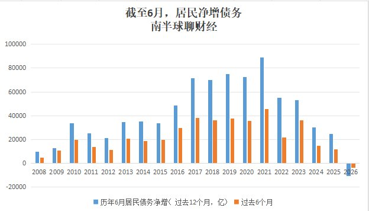
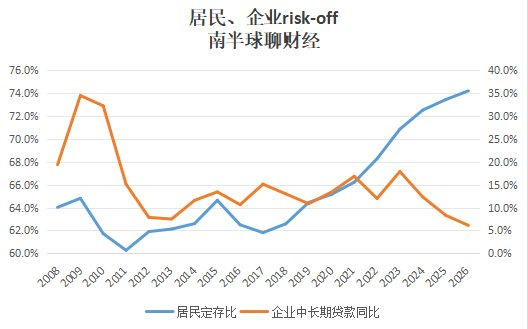
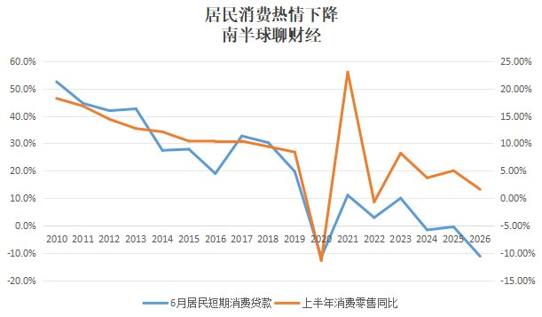
一句话核心： Jason 自己做的三张图，用数据坐实一个判断——中国居民正在"少借钱、多存钱、少消费"，即典型的"去杠杆 + 消费收缩"。
背景与关键数据： 这是星主亲手做的原创图表（标题带"南半球聊财经"水印），三张图分别拆解居民负债、储蓄意愿、消费意愿。
图片解读：
- 图 1（截至 6 月居民净增债务）：蓝柱是"过去 12 个月居民债务净增"、橙柱是"过去 6 个月"。2021 年是高峰（蓝柱 ~8.8 万亿），此后逐年下滑，2026 年（最右）几乎贴地甚至转负——居民在还债多于借债，也就是"去杠杆"。
- 图 2（居民、企业 risk-off）：蓝线是"居民定期存款占比"，一路从 2020 年的 ~64% 升到 2026 年的 ~74%（钱越来越多锁进定存 = 不敢花、求安稳）；橙线是"企业中长期贷款同比"，从 2021 年的 ~17% 掉到 2026 年的 ~5%（企业也不愿借钱扩产）。居民和企业同时"避险"（risk-off）。
- 图 3（居民消费热情下降）：蓝线"6 月居民短期消费贷款"增速从 2010 年的 ~53% 一路跌到 2026 年的 负值（~-12%）；橙线（右轴）"上半年消费零售同比"也降到 ~1%。借钱消费的意愿和实际消费增速双双走弱。
为什么重要 / 对市场和经济的含义： 这三张图是今天最"接地气"的内需体检报告，和第 2 篇（房价）、第 5 篇（人口）互相呼应。居民"去杠杆 + 存钱 + 不消费"意味着：① 内需难以自发回暖，通缩压力大（连到 PPI 那篇）；② 经济增长只能更多依赖出口和财政（连到基建、电池消费税）；③ 对消费股、地产链是持续逆风。这也是"资产负债表衰退"的教科书特征。
延伸知识 —— 什么是"资产负债表衰退"？ 经济学家辜朝明提出：当资产（房子、股票）价格暴跌但债务不变时，家庭和企业会从"追求利润最大化"转向"追求负债最小化"——即使利率降到很低，大家也只想还债、不想借钱花钱。结果是货币政策失灵（降息也刺激不动需求），只能靠政府加杠杆填补。日本 1990 年代就是典型。图 1、图 2 里"居民净增债务贴地 + 定存占比飙升"正是这种心态的数据印证。
第 7 篇 · 17:13 · 工业利润：只有"AI+有色"一枝独秀（广发证券） #经济数据#
帖子原文：
广发：我们测算，今年前 5 个月规上工业企业利润中，"AI+有色"3 大行业利润合计同比增长 106.9%、"能源和石化产业链"6 大行业利润合计增长 51.3%；其余行业利润同比下降 8.1%，低于 2025 年的同比增长 2.9%。#经济数据#
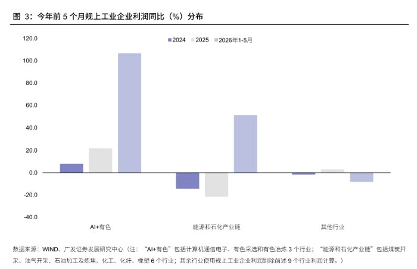
一句话核心： 今年工业企业的利润高度集中在"AI + 有色"和"能源石化"两个板块，其余绝大多数行业利润其实是负增长——盈利极度分化。
背景与关键数据： "规上工业企业"= 年营收 2000 万元以上的工业企业。前 5 个月：AI+有色（计算机通信电子、有色采选、有色冶炼 3 行业）利润 +106.9%；能源和石化产业链（6 行业）+51.3%；其余行业 -8.1%，还比 2025 年的 +2.9% 更差。
图片解读： 图 3 是分组柱状图，三组分别是 AI+有色、能源石化产业链、其他行业；每组三根柱代表 2024（紫）、2025（灰）、2026 年 1-5 月（浅紫）。AI+有色的 2026 柱高高冲到 ~107%，能源石化 2026 柱 ~50%，而其他行业 2026 柱是负的（~-8%）。视觉上一目了然：利润增长全靠头两组撑，尾部一大片行业在失血。
为什么重要 / 对市场和经济的含义： ① 这是"K 型复苏"的铁证——少数高景气赛道（AI 算力、有色金属涨价）吃掉了绝大部分利润增量，传统制造业在内卷和低价中挣扎。② 对股票投资的含义是"结构远大于总量"：指数可能平淡，但 AI 产业链和资源品（铜、金、稀土）是真正有盈利支撑的方向。③ 也解释了为什么政策要抓"反内卷"（连到第 10 篇电池消费税），给尾部行业止血。
延伸知识 —— "K 型复苏"与利润集中度。 "K 型"指经济复苏时不同群体/行业走势像字母 K 一样分叉：一部分向上（高科技、资源品、龙头企业），一部分向下（传统、中小、低端制造）。利润越集中，说明经济增长的"含金量"越依赖少数赛道，普通企业和就业感受不到暖意。判断一个市场是否健康，不能只看总量增速，还要看"增长是雨露均沾还是赢家通吃"。
第 8 篇 · 17:16 · 油价高位或推升 PPI 二次回升（国金证券） #经济数据#
帖子原文：
国金：若下半年油价持续高位运行，PPI 同比存在二次走高的可能。测算显示，若布伦特原油月均价维持在 80-85 美元/桶附近，PPI 同比回落幅度可能明显小于此前的中性预期；若油价持续维持在 90 美元/桶以上，则 PPI 可能在年底回到前期高点附近。但无论具体情景如何，近期油价再度上行已经增加了下半年 PPI 路径的不确定性，并成为市场的潜在担忧之一。截至 6 月，PPI 涨价在向中游传导，但向下游的扩散尚不明显。#经济数据#
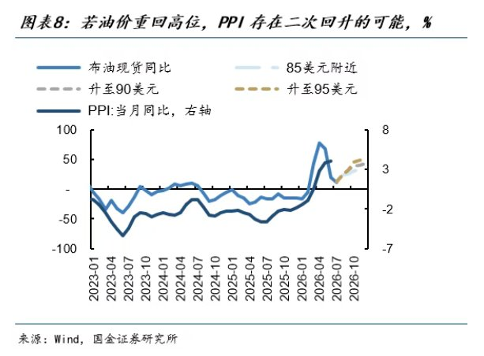
一句话核心： 如果油价站上 90 美元并维持，中国的工业品出厂价格（PPI）可能在年底"二次冲高"，给本已疲弱的经济增添成本压力。
背景与关键数据： PPI（生产者价格指数）= 工厂出厂价格的涨跌，反映工业端的通胀/通缩。国金测算了三种油价情景：布油 80-85 美元 → PPI 降幅收窄；持续 90 美元以上 → PPI 年底回到前期高点。截至 6 月，涨价已从上游传到中游，但还没传到下游（消费端）。
图片解读： 图表 8 是一张双轴线图。浅蓝线是"布伦特原油现货同比"、深蓝线是"PPI 当月同比（右轴）"，两者高度同步。图右端用三条虚线画出情景推演——85 美元（浅虚线）、升至 90 美元、升至 95 美元（不同虚线），显示油价越高，未来几个月 PPI 反弹的斜率越陡。横轴从 2023-01 延伸到 2026-10，能看到 2026 年初 PPI 触底后，在高油价情景下重新翘头。
为什么重要 / 对市场和经济的含义： 这一篇和第 1 篇（美伊冲突/霍尔木兹）直接联动——地缘冲突推高油价，油价再推高 PPI。对中国而言这是"坏的通胀"：不是需求旺盛带来的涨价，而是输入型成本上升。它会挤压中下游企业利润（本已只有 AI+有色赚钱，第 7 篇）、抬高央行降息的顾虑，让"稳增长"更难。对资产的含义：利好上游资源/能源股，利空中下游制造和消费。
延伸知识 —— PPI 与 CPI 的"剪刀差"。 PPI 是工厂端价格，CPI 是老百姓消费端价格。当 PPI 涨、CPI 不涨（涨价传导不到下游）时，就出现"剪刀差"——中游企业两头受挤：进货成本涨了，但产品卖不上价。这正是国金说的"传到中游、没传到下游"。剪刀差扩大往往意味着中游制造业利润承压，是判断企业盈利拐点的重要领先信号。
第 9 篇 · 17:19 · 6 月结售汇：人民币保持韧性（广发证券） #金融#
帖子原文：
广发：6 月银行自身净结汇 -52 亿元，环比回升 350 亿元，代客净结汇 3,913 亿元，环比、同比分别大幅增加 1,064 亿元、2,073 亿元。人民币保持韧性，结汇意愿明显增强，测算 6 月结汇率 66.47%，环比、同比分别大幅提速 5.3pct、3.1pct；售汇率 61.61%，环比基本持平，同比大幅回落 3.4pct。受美元强势反弹、人民币小幅回调的影响，资本与金融项目净结汇再度由顺转逆。6 月资本与金融项目结售汇逆差 542 亿元，逆差环比、同比分别走扩 870 亿元、714 亿元；其中证券投资净结汇 289 亿元，逆差环比、同比分别走扩 783 亿元、844 亿元。#金融#
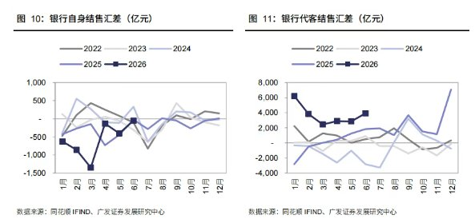
一句话核心： 6 月企业和居民"卖美元换人民币"的意愿明显增强（结汇率飙升），人民币有韧性；但资本项目（证券投资等金融资金）却在净流出，两股力量在拉锯。
背景与关键数据： 结汇= 把外币换成人民币（看多人民币）；售汇= 把人民币换成外币（看空人民币）。结汇率 66.47%（环比 +5.3pct、同比 +3.1pct）——出口收到美元后，愿意换成人民币的比例明显上升，说明市场对人民币信心增强。代客净结汇 3913 亿元大幅增加。但另一边，受美元反弹影响，资本与金融项目转为逆差 542 亿元，其中证券投资逆差走扩——外资/跨境资金在流出。
图片解读： 图 10 + 图 11 两张折线图。图 10 是"银行自身结售汇差"，图 11 是"银行代客结售汇差"，每条线一个年份。深色的 2026 线在代客图（图 11）里年初冲到 ~6000 亿的高位后回落到 ~3000 亿，位置整体偏高——直观显示今年代客结汇（换人民币）意愿强；自身结售汇（图 10）2026 年初为负、后逐步回升。
为什么重要 / 对市场和经济的含义： 这一篇是把第 3 篇（美元/美联储加息）落到人民币汇率的具体数据。逻辑是：一边是贸易顺差 + 强结汇意愿在支撑人民币（经常项目托底）；另一边是美元走强 + 资本外流在压人民币（金融项目施压）。两者对冲，人民币呈现"韧性但不强势"。对投资者的含义：关注这个"经常项目 vs 资本项目"的拉锯，一旦美联储真加息（第 3 篇）导致资本外流加速，人民币贬值压力会上升，进而影响 A 股外资流向和跨境资产配置。
延伸知识 —— "结汇率"为什么是情绪温度计？ 出口企业收到美元后，可以选择立刻换成人民币（结汇），也可以先屯着美元等升值。当大家都急着结汇，说明市场预期人民币要涨/至少不跌；当大家囤美元不结汇，就是看空人民币的信号。所以"结汇率"比汇率本身更能提前反映市场情绪——它是企业用真金白银投出来的"人民币信心指数"。6 月结汇率跳升 5 个百分点，是个偏积极的信号。
第 10 篇 · 17:23 · 电池消费税：从免征恢复征收（华创证券） #TAX#
帖子原文：
华创：电池消费税调整的四点理解，呼应"保持合理的宏观税负水平"。#TAX#
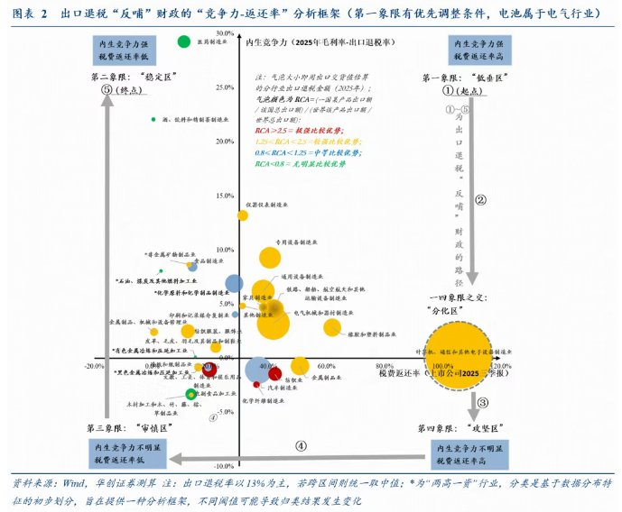
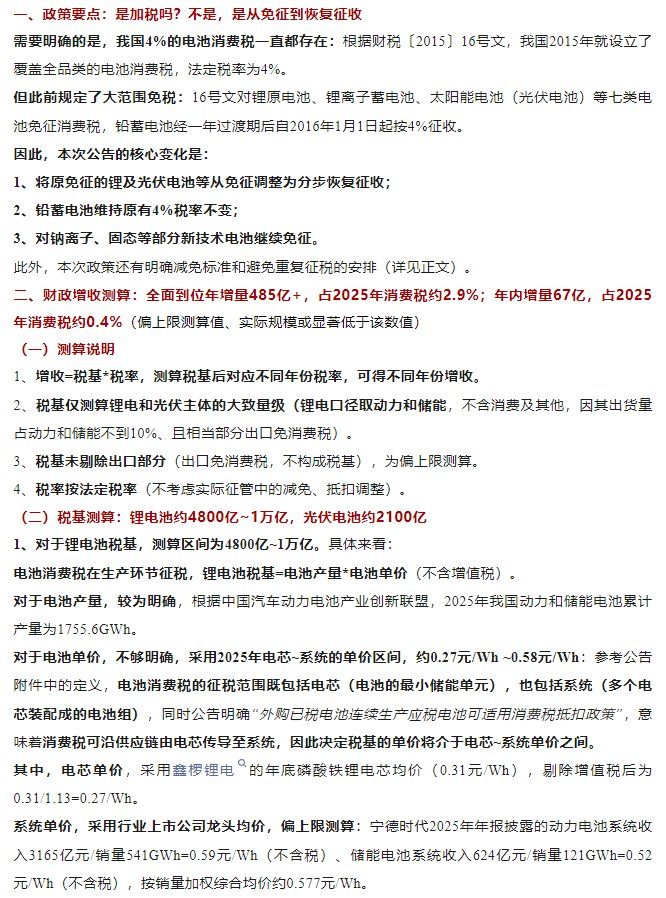
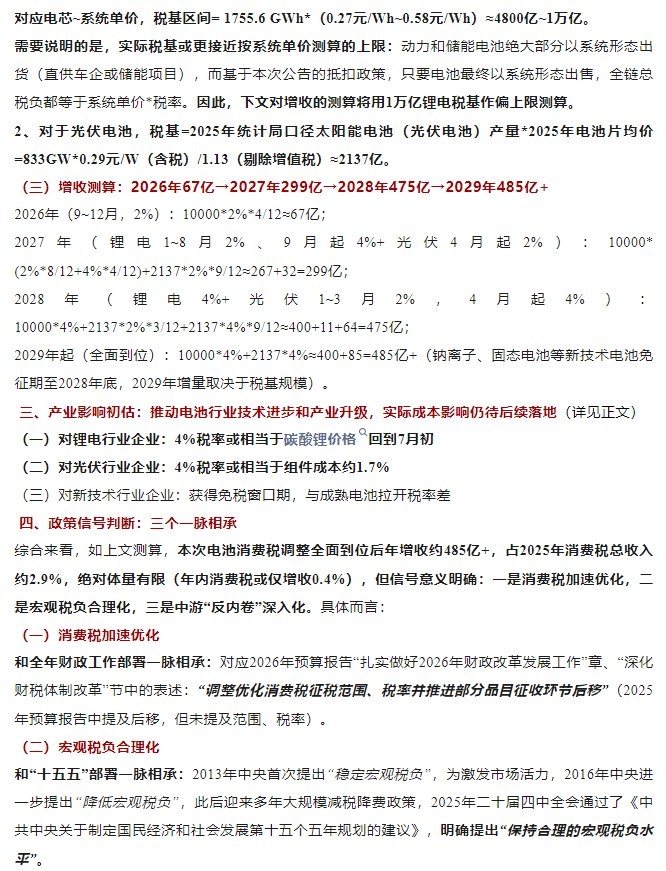
一句话核心： 这次不是"新加税"，而是把原本免征的锂电池、光伏电池的 4% 消费税分步恢复征收；短期财政增收有限，但释放了"税制优化 + 宏观税负合理化 + 中游反内卷"三个信号。
背景与关键数据： 关键点澄清——中国 4% 的电池消费税一直存在（2015 年财税〔2015〕16 号文设立），只是此前对锂电池、锂离子蓄电池、太阳能（光伏）电池等七类免征。本次核心变化：① 锂/光伏电池从免征→分步恢复征收；② 铅蓄电池维持 4% 不变；③ 钠离子、固态等新技术电池继续免征。财政增收测算：全面到位年增量 485 亿元+（占 2025 年消费税约 2.9%）；年内增量仅 67 亿元（占 0.4%）。 分年路径：2026 年 67 亿 → 2027 年 299 亿 → 2028 年 475 亿 → 2029 年 485 亿+。税基：锂电约 4800 亿~1 万亿，光伏电池约 2100 亿。产业影响：锂电行业 4% 税率≈碳酸锂价格回到 7 月初水平；光伏≈组件成本约 1.7%。
图片解读：
- 图 1（竞争力-返还率分析框架）：一张气泡散点图。横轴是"税费返还率"、纵轴是"内生竞争力"，每个气泡是一个制造业细分行业。四个象限分别标注"稳定区/低估区/审慎区/攻坚区"。电池所属的电气行业落在第四象限"攻坚区"（返还率高、内生竞争力待提升），意在说明这类行业是出口退税"反哺财政"结构性调整的重点方向。
- 图 2（政策要点文字）：把"是加税吗？不是，是从免征到恢复征收"讲清楚，并列出财政增收测算和锂电/光伏的税基测算方法。
- 图 3（增收路径与信号文字）：给出 2026→2029 年增收路径（67→299→475→485 亿），以及三个政策信号——消费税加速优化、宏观税负合理化、中游"反内卷"深化，并引用 2025 年二十届四中全会"保持合理的宏观税负水平"的表述。
为什么重要 / 对市场和经济的含义： ① 对锂电/光伏行业：短期是成本抬升（相当于碳酸锂涨价或组件成本 +1.7%），利空，但因为是"全行业普征"，龙头企业相对更能转嫁、反而受益于行业出清——这正是"反内卷"的用意：用税收抬高地板价，逼退低价恶性竞争的小厂。② 对财政：短期增收有限（年内才 67 亿），象征意义大于实际，重点是"税制结构优化"的方向。③ 对新技术电池（钠离子、固态）：继续免征等于给它们一个"免税成长窗口期"，鼓励技术升级。
延伸知识 —— 什么是"反内卷"式的产业政策？ "内卷"指行业内企业为抢份额疯狂降价、大家都不赚钱甚至亏损（光伏、锂电近两年就是典型）。政策治理内卷的一个思路是"提高准入或成本门槛"——比如恢复征税、提高能耗/技术标准，让扛不住的小产能主动退出，剩下的龙头恢复合理利润。这与供给侧改革（2016 年钢铁煤炭去产能）一脉相承：用行政/税收手段收缩过剩供给，修复行业盈利。看懂这层，就明白"恢复征税"表面利空、实则可能利好龙头股的辩证逻辑。
今日全图索引
| 帖号 | 时间 | 主题 | 标签 | 图片文件 |
|---|---|---|---|---|
| 1 | 15:49 | 美伊冲突升级（zerohedge） | #其他国家经济# | post1_img1.jpg / post1_img2.jpg / post1_img3.jpg |
| 2 | 15:53 | 房地产仍在磨底（国金） | #房价# | post2_img1.jpg / post2_img2.jpg |
| 3 | 16:01 | 美联储加息预期与拉美套息（bloomberg） | #金融# | post3_img1.jpg / post3_img2.jpg / post3_img3.jpg |
| 4 | 16:06 | 基建：财政资金是关键变量（粤开） | #TAX# | post4_img1.jpg / post4_img2.jpg / post4_img3.jpg / post4_img4.jpg |
| 5 | 16:10 | 人均 GDP 与人口辩论（何亚福） | #经济数据# | post5_img1.jpg / post5_img2.jpg |
| 6 | 17:08 | 降消费、去杠杆（自制图表） | #自制图表# | post6_img1.jpg / post6_img2.jpg / post6_img3.jpg |
| 7 | 17:13 | 工业利润"AI+有色"独秀（广发） | #经济数据# | post7_img1.jpg |
| 8 | 17:16 | 油价高位或推升 PPI（国金） | #经济数据# | post8_img1.jpg |
| 9 | 17:19 | 6 月结售汇：人民币韧性（广发） | #金融# | post9_img1.jpg |
| 10 | 17:23 | 电池消费税恢复征收（华创） | #TAX# | post10_img1.jpg / post10_img2.jpg / post10_img3.jpg |
数据来源：知识星球「南半球聊财经」星主 Jason 不跪 2026-07-19 发帖原文与配图。图表原图存于 jason_images/2026-07-19/。本报告仅为学习跟读用途，不构成投资建议。